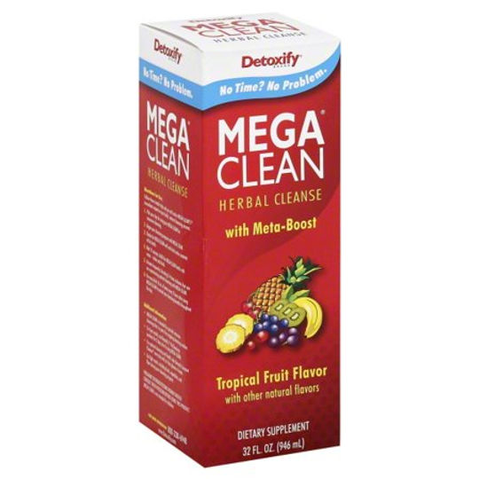

Retail Education
What is "Detox"
Let’s face it: we’re all toxic to some degree. Whether it’s the air we breathe, the foods we eat, the smoke we exhale, or the fluids we’re chasing with a soda-back, our bodies are built to naturally expel these toxins from our systems. If you party hard, your body has to work longer and harder to remove all of those residual toxins. The body’s systems – circulatory, digestive, urinary – are constantly at work trying to remove toxins.
When you add Detoxify products to your natural cleanse routine, you supercharge your body’s ability to do what it normally does, better. Detoxify products are body hacks; they are cheat codes for the body that let you expedite and enhance your natural ability to rid your systems of toxins. That means your body will be better and quicker at removing those toxins, so you can get back to working and partying as hard as you want.
Short Term v. Long Term Detox
Many of us lead busy lives and don’t pay much attention to cleansing until the first time that we have to; we work hard, we party hard, and when we need to be clean, it’s a short-lived need and then we can get back to working and partying just as hard. For others, regular cleansing is an essential part of any lifestyle and they plan for long-term cleanses to help keep the body free of life’s toxins.
Detoxify understands that some of us are looking for short term cleanses that rapidly flush our bodies of toxins for a short period of time, while others are looking to permanently remove toxins and have the time to commit to a long term cleanse.
If you need to feel your best and be toxin free immediately, you’re going to want to choose one of our "High Toxin, No Time” products such as Mighty Clean or Mega Clean NT. If you’ve got a few days to cleanse, something like Ready Clean or Xxtra Clean would work great. And, if you want a permanent, long-term full body cleanse and you’ve got five days to commit to it, then Ever Clean is the perfect product for your goals.